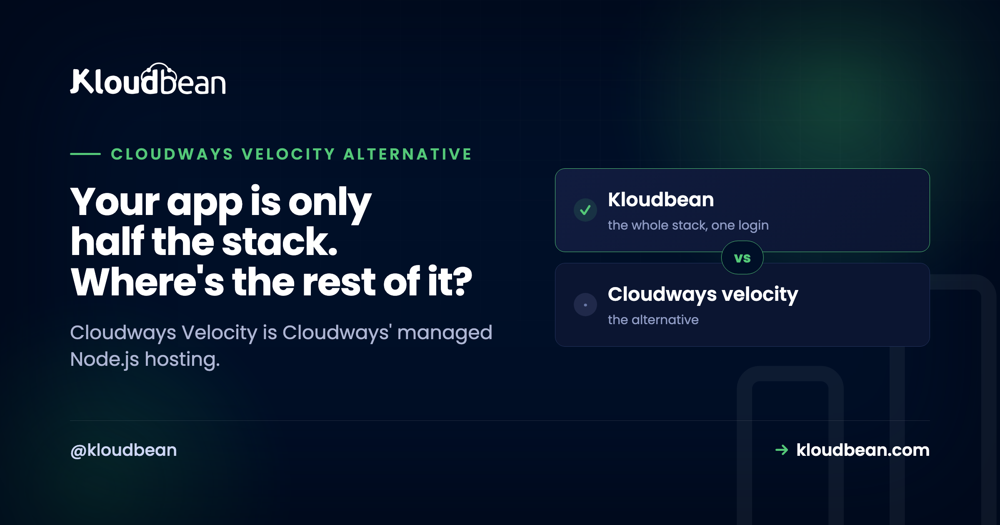

Cloudways Velocity Alternative: A Narrow, Early Product and What It Costs You

If you're evaluating Cloudways Velocity, start with what it will not do, because that's what decides this. Velocity is Cloudways' managed Node.js product, renamed. By Cloudways' own description it is "a JavaScript runtime", it runs on DigitalOcean infrastructure, it provisions PostgreSQL, and it is still in invite-only private preview. Those four facts rule out more than most feature tables reveal, and none of them is my characterisation. They're all published by Cloudways.
This isn't a "both are great, pick your favourite" comparison. Velocity is an early, deliberately narrow product, and if your stack is anything other than JavaScript, it isn't a candidate at all.
Cloudways Velocity is JavaScript only, so it will not host WordPress, PHP, Python, Ruby, Java or Go. It runs on DigitalOcean infrastructure, provisions PostgreSQL, and is invite-only in private preview, with CI/CD pipelines, multi-region and broader cloud support listed by Cloudways as still on the way. Pricing starts from $21/month at general availability, and you choose a plan per application rather than packing apps onto a server. Kloudbean starts at $8/month, runs seven clouds and many languages, and is generally available now. One honest caveat both ways: Kloudbean's own plan table lists "Standard Limits" on application count for Standard and Premium, with unlimited only on Enterprise.
The four boundaries, straight from Cloudways' documentation
Before any comparison, here's what Velocity is. Each row is Cloudways' own published position, not an inference.
| Boundary | What Cloudways says | What it rules out |
|---|---|---|
| Language | "Velocity is a JavaScript runtime used to build fast and scalable web applications, APIs, and backend services." Supported workloads named: Astro, React, Angular, Express, Fastify. | WordPress. PHP. Python. Ruby. Java. Go. Anything not JavaScript. |
| Cloud | "It runs on the Cloudways Lightning Stack on DigitalOcean infrastructure." | The other four clouds Cloudways offers on its own Flexible product. |
| Database | "Provision PostgreSQL alongside your application." | MySQL. MariaDB. MongoDB. Redis. Anything but Postgres. |
| Availability | "Currently in Private Preview", "invite-only", with a waitlist. CI/CD pipelines, multi-region deployments and broader cloud provider support are described as "on the way". | Deploying today without an invite. Planning around CI/CD or multi-region now. |
Read the first row twice, because it's the one people miss. Velocity does not host WordPress. Not as a limitation to work around, but by design: it's a JavaScript runtime. WordPress on Cloudways lives on a different product entirely, Cloudways Flexible. So if your company has a marketing site on WordPress and an API in Node, Velocity covers exactly one of those two, and the other one is a separate product, a separate plan, and a separate place to log in.
Why "Cloudways is mature" isn't the argument here
You'll see this comparison written as "Cloudways is an established host, so weigh that against the newer option." That framing doesn't survive contact with the facts, and it's worth saying why plainly.
Cloudways the company is established. Velocity the product is in private preview. Those are not the same claim, and the maturity of the parent product transfers less than the marketing implies, because Velocity is a separate stack on a separate footprint with a separate feature set. Cloudways Flexible gives you five clouds; Velocity gives you one. Flexible states there is no restriction on applications per server; Velocity sells a plan per application. Flexible runs WordPress, Magento, Laravel and PHP; Velocity runs none of them.
So when someone tells you Velocity inherits a decade of platform maturity, ask which part. The CI/CD pipelines aren't shipped. Multi-region isn't shipped. The additional clouds aren't shipped. Cloudways says so themselves, in the launch announcement, under the heading of what's coming at general availability.
The pricing model inverts, and that's the expensive part
This is the part that actually shows up on an invoice, and it's structural rather than a matter of a few dollars.
On Cloudways Flexible, the economics are per server. Their pricing FAQ is explicit: "There is no restriction on the number of applications you can launch on a single server." So you buy a server and pack it. Five small client sites on one $11 box is a normal, sensible move.
On Velocity, you choose a plan per application. The launch flow is: pick your Velocity plan, then connect one repository. To add another app, their overview guide says to "click Add Application if you want to launch another Velocity application", and that one gets its own plan, its own database credentials, its own monitoring and its own backups. So the unit of billing moved from the server to the app.
That inversion matters most to exactly the audience Cloudways names in its own announcement: agencies managing multiple client applications. Three small Node services that would have shared one server now sit on three plans. Nothing about that is hidden, but it's easy to miss when you're reading a feature list rather than a billing model.
Real pricing, from both vendors' own pages
Verified figures only. Check both pricing pages before you commit, because these move and promotional rates come and go.
| Cloudways Velocity | Cloudways Flexible | Kloudbean | |
|---|---|---|---|
| Entry price | From $21/mo at general availability | From $11/mo (2GB RAM, 1 vCPU, 50GB storage) | From $8/mo |
| Billing unit | Per application | Per server | Per server |
| Apps per server | Plan is per app | "No restriction on the number of applications" | "Standard Limits" on Standard and Premium; unlimited on Enterprise |
| Clouds | DigitalOcean | 5 (DigitalOcean, Vultr, Linode, AWS, Google Cloud) | 7 (AWS, Lightsail, Google Cloud, Linode, Vultr, DigitalOcean, UpCloud) |
| Languages | JavaScript only | PHP, WordPress, Magento, Laravel | PHP, WordPress, WooCommerce, Laravel, Magento, Drupal, Joomla, Node, Python, Ruby, Java, Go, static |
| Databases | PostgreSQL | MySQL and MariaDB with the app | 9+ documented, including MySQL, PostgreSQL, MongoDB, Redis, MariaDB, Elasticsearch |
| Availability | Private preview, invite-only | Generally available | Generally available |
| Free trial | Complimentary during preview, terms apply | 3 days, no card required | 3 days, servers only |
Two observations worth drawing out. First, Velocity's entry price is roughly double Cloudways' own Flexible entry, for a product that runs one language instead of four, on one cloud instead of five. You pay more to be able to do less. That's a defensible trade if the Node-native tooling is what you're buying, and it's worth being clear-eyed that it is the trade.
Second, an honest one against us: Kloudbean's managed databases are separately priced subscriptions, not bundled with the server. Managed PostgreSQL starts at $18/month for a 1GB Starter instance, $30/month for 2GB, and $60/month for 4GB. Velocity provisions Postgres as part of the application. For a single small app where you'd take the smallest database anyway, that bundling is a genuine point in Velocity's favour on total cost, and any comparison that hides it isn't worth reading.
Where Kloudbean has limits too
If this page only listed the other product's constraints it would be marketing, so here are ours, from our own documentation.
Application count is capped below Enterprise. Kloudbean's plan comparison lists "Application Limit: Standard Limits" for both Standard and Premium, and unlimited only on Enterprise. So "host as many apps as you like on one server" is not a promise we get to make on an $8 plan either. If packing a large number of apps onto one box is the whole plan, get the specific number for your tier before you build around it.
Databases cost extra. As above. A server plus a managed Postgres is two subscriptions.
Free migration is per tier, not unlimited: one migration per server on Standard, up to 10 on Premium, unlimited on Enterprise.
BitNinja Pro security is Premium and Enterprise. Standard's baseline is the Shorewall firewall plus Fail2ban, which is real hardening but it isn't the same thing.
The free trial is servers only. Databases and load balancers bill from creation, with no trial.
None of that changes the shape of the comparison, and stating it is the only way the rest of the page earns any credibility.
So which one, and when
The decision is unusually clean here, because the boundaries do most of the work.
Velocity fits if your application is JavaScript, you are happy on DigitalOcean, Postgres is your database, you can get an invite, and the per-application billing suits how many apps you actually run. For a single Node or Astro app from a team that wants Node-native tooling and nothing else, that's a coherent product and the framework presets and dashboard process management are the point of it.
Velocity does not fit the moment a second language appears. A WordPress site next to the API. A Python service doing the data work. A Laravel admin panel. Any of those and you are running two Cloudways products, or looking elsewhere.
Kloudbean fits when the stack is mixed or expected to become mixed, when you want more than one cloud on the table, when you want the database, object storage and load balancer in the same dashboard as the app, and when you'd rather not wait for an invite. WordPress, WooCommerce, Laravel, Magento, Drupal and Joomla run alongside Node, Python, Ruby, Java, Go and static sites, with staging available for WordPress and Laravel.
Write down every service your product will need in six months, then mark each one "in the platform" or "somewhere else". That list, not a feature table, is the answer.

Moving a Node app across
Undramatic, which is the point. A Node app is a repository, a set of environment variables and a database.
Point a Kloudbean server at the same GitHub repository, copy the environment variables into the dashboard, move the database with a standard dump and restore, swap the connection string, then redeploy and verify before you cut any traffic over. Your app runs as an always-on process under PM2, deploys come from Git with the build log streaming live, and application logs are readable in the dashboard under Application Administration then Logs Viewer, where the App Errors tab holds the error log.
How it fits the rest of your stack
Start with where to deploy a Node.js app for the architectural options, then the hands-on deploy a Node app to a managed cloud, deploy an Express app and deploy a NestJS app. Weighing Cloudways more broadly? See Kloudbean vs Cloudways and Cloudways alternatives. For the database beside the app, managed PostgreSQL hosting.
Run every language your product needs, in one dashboard.
Deploy from GitHub, run always-on under PM2, and put a managed PostgreSQL, MySQL, MongoDB or Redis beside the app, with object storage, static sites and a load balancer across seven clouds. Generally available, no waitlist. Start from $8/mo at kloudbean.com, and verify current pricing on pricing.
Seven clouds · Many languages · Managed databases beside the app · Object storage and load balancer · From $8/mo · Free migration
FAQ
What is Cloudways Velocity?
Cloudways Velocity is Cloudways' managed Node.js hosting, renamed. Their documentation notes it is a product name change only. Cloudways describes it as a JavaScript runtime for web applications, APIs and backend services, running on the Cloudways Lightning Stack on DigitalOcean infrastructure, with Git-based deployment from the Cloudways platform.
Does Cloudways Velocity support WordPress?
No. Velocity is a JavaScript runtime, so it does not run WordPress or any other PHP application. WordPress on Cloudways runs on their separate Flexible product. If you need WordPress and a Node app together, that is two different Cloudways products rather than one platform.
Can Velocity run PHP, Python, or Ruby apps?
No. Velocity is JavaScript only. The workloads Cloudways names are Astro for server-side rendering, React and Angular for client-side rendering, and Express and Fastify for backend APIs. PHP, Python, Ruby, Java and Go are outside its scope, so a mixed-language stack needs another platform alongside it.
How much does Cloudways Velocity cost?
Cloudways states that pricing starts from $21 per month at general availability, with access complimentary during the preview period subject to terms. You select a plan per application rather than per server, so the cost scales with the number of applications you run. Check Cloudways' own pricing page for current figures.
Is Cloudways Velocity generally available?
Not at the time of writing. Cloudways describes it as being in private preview and invite-only, with a waitlist to join. Their announcement lists broader cloud provider support, CI/CD pipelines and multi-region deployments as still on the way at general availability, so those are not features you can plan around today.
How many applications can I run on one Velocity plan?
Velocity plans are chosen per application. Their overview guide directs you to click Add Application to launch another Velocity application, which gets its own plan and its own database credentials. That differs from Cloudways Flexible, where their pricing FAQ states there is no restriction on the number of applications per server.
Which cloud providers does Cloudways Velocity support?
One. Cloudways states that Velocity runs on the Cloudways Lightning Stack on DigitalOcean infrastructure. Their Flexible product supports five clouds, so choosing Velocity narrows your provider choice compared with the rest of the Cloudways platform. Broader cloud support is listed as coming at general availability.
Which database can I use with Cloudways Velocity?
PostgreSQL. Cloudways describes provisioning PostgreSQL alongside your application, and notes you can skip database provisioning if your app uses an external database or none at all. If your application needs MySQL, MariaDB, MongoDB or Redis, you would connect to something outside Velocity.
What is the best Cloudways Velocity alternative?
It depends on how narrow your needs are. If you only ever run JavaScript on DigitalOcean with Postgres, Velocity is coherent. If your stack is mixed or likely to become mixed, Kloudbean is the closer fit: seven clouds, many languages, managed databases, object storage and a load balancer in one dashboard, generally available from $8 a month.
Does Kloudbean have application limits too?
Yes, and it's worth knowing. Kloudbean's plan comparison lists "Standard Limits" on application count for the Standard and Premium tiers, with unlimited applications only on Enterprise. So if hosting a large number of apps on one server is central to your plan, confirm the specific limit for your tier first. Managed databases are also separate subscriptions rather than bundled with the server.